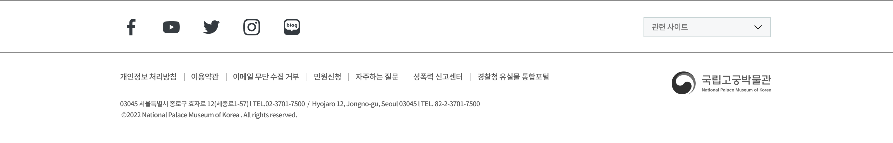

<!doctype html><html lang="ko-KR"><head><meta charset="UTF-8"><meta http-equiv="X-UA-Compatible" content="IE=edge"><meta name="viewport" content="width=device-width,initial-scale=1"><title>국립고궁박물관</title><link rel="icon" href="favicon.png"><script defer="defer" src="./js/727.aa08c70cc2305daec634.bundle.js"></script><script defer="defer" src="./js/307.d3f7a9f7183b88e543b8.bundle.js"></script><script defer="defer" src="./js/879.8ac0c3c8bc94db9cf0e9.bundle.js"></script><script defer="defer" src="./js/type_a_1.e8fe6d0cc03a06815197.bundle.js"></script><link href="174.1c3e02d502f3d7b21a38.css" rel="stylesheet"></head><body class="type-a"><main><header><div class="logo"></div><div class="nav-wrap"></div><div class="util-wrap"></div></header><div class="inner-wrap"><section class="section section-1"><div class="section-inner"><div class="section-title"></div><div class="home-1"></div><div class="btns"></div></div></section><section class="section section-2"><div class="section-inner"><div class="section-title"></div><div class="home-2"><div id="hero-canvas"></div><div class="canvas-back-wrap"><a href="exhibit_detail.html"></a></div></div></div></section><section class="section-link"><a href="map_1.html" class="map-link"><div class="left-box"></div><div class="right-box"></div></a></section><section class="section-cons"></section></div><footer class="footer"></footer></main></body></html>